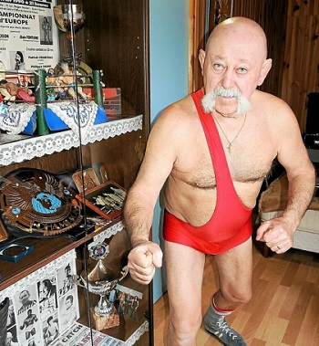

Le Coup de Latte Londonienne

A l'instar des "Grosses Têtes", comme de toutes les émissions de radio phares des 40 dernières années. Ce podcast se traduit par une forme d'affrontement entre candidats sur des questions d'actualités insolites, des citations, des morts insolites, ou tout simplement de la culture générale. Il s'agit donc ici avant tout d'un divertissement, comme en atteste son logo ci-à côté. Le mieux est encore d'aller se faire sa propre idée en allant écouter en cliquant sur le lien plus bas. Bonne écoute !